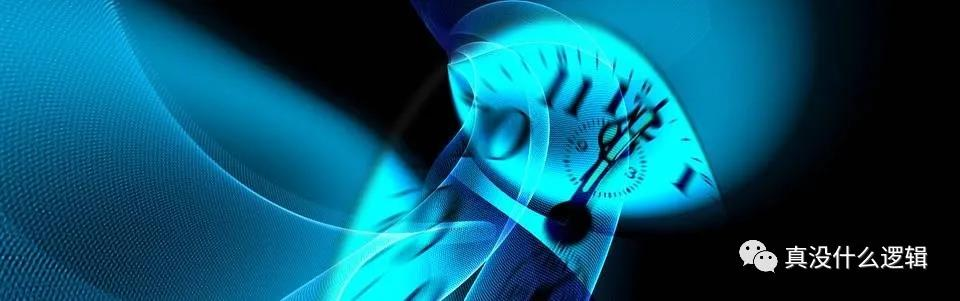
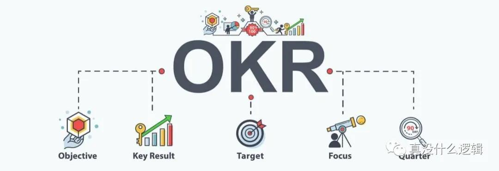
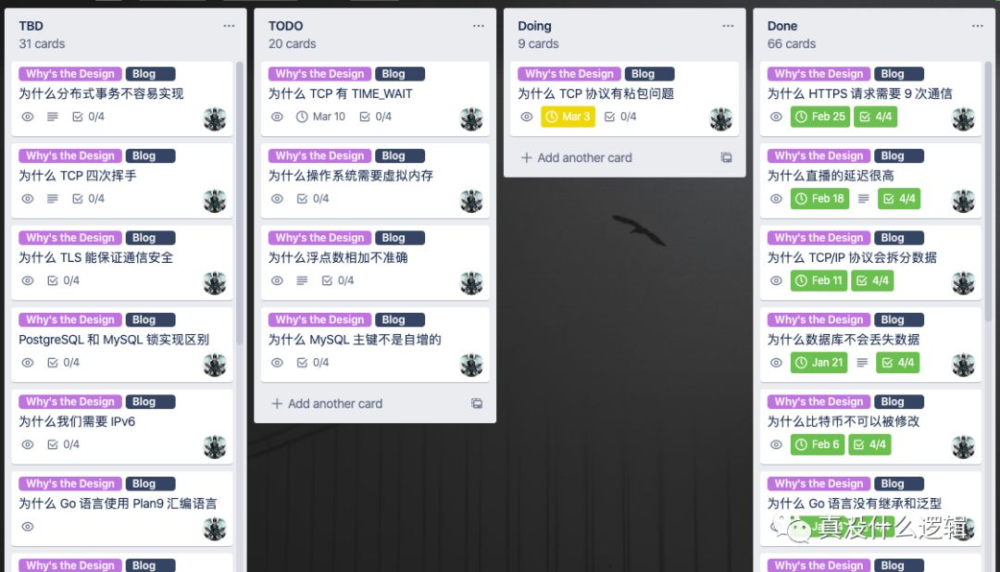
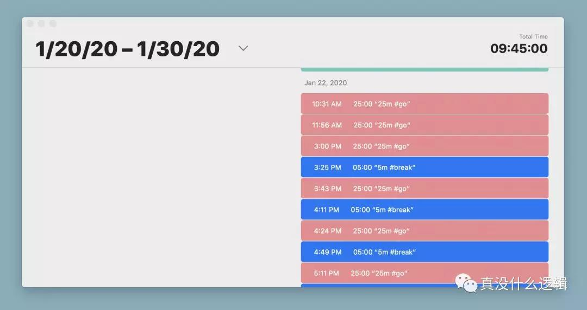

时间是我们最重要的资产，对时间的使用和管理决定了我们的个人成长。人的注意力是有限的，我们不能将同一份时间投入到不同的事情中，一旦选择花费时间做一些事情，就不得不放弃做其他事情的可能性。如果我们能够静下心来思考应该如何使用自己的最重要资产，一定能获得更大的个人成长和回报。

time-banner时间管理是一个非常大的话题，每个人都使用不同的工具和思想来管理和分配时间，因为之前有读者希望作者分享一下时间管理的经验，所以在这里我也跟各位读者简单分享一下自己在时间管理上的方法。
本文想要说明的是，时间管理不是目的，它是为了达到某种目的的一个手段。我们需要通过合理规划自己的时间更快更好地实现某些目标，例如：学习技术知识、投资理财以及完成工作等。本文将从确定目标、拆分任务以及完成任务三个方面介绍如何管理时间，在每一个方面作者都会给出合适的工具或者参考资料帮助读者更好地理解内容。
确定目标
如何确定目标是非常重要的，它决定了我们期望成为什么样的人，根据实现目标需要的时间我们可以将其分成短期目标、中期目标和长期目标。短期目标的实现可能需要 1 ~ 2 年，中期目标需要 2 ~ 5 年，长期目标可能需要 5 年以上的时间。我们并不是一定要将目标按照时间严格的分类，也不应该纠结于上面对目标类型的划分，但是一定要在制定计划时有短期和长期的区分。
We always overestimate the change that will occur in the next two years and underestimate the change that will occur in the next ten. Don’t let yourself be lulled into inaction.
制定短期和中期目标相对是比较容易的，但是长期目标就比较困难，我们很难说清楚未来 5 年或者 10 年到底会做什么，作者也没有一个非常明确的中期和长期目标，只是有几个关于未来的长期期望，短期目标需要我们坐下来花一段时间仔细思考的。我们可以将这种稍显复杂的模型简化成对未来的长期期望以及为了实现长期的期望应该做什么。
目标和关键结果（Objectives and key result，OKR）是一个用来管理目标的工具[^1]。OKR 的名字很好地解释了它包含的内容，它由目标和关键结果两部分组成，可以帮助我们聚焦未来一段时间的关注点，相信很多公司都在使用 OKR 协调公司和员工的方向，保证组织中的所有成员都对目标达成一致。

ok我们也可以使用 OKR 来管理个人的目标，作者一般会在每年的年初定下全年 OKR 决定几个期望达到的目的，这些目标就是短期目标，它们应该能够帮助长期目标的实现。相信几乎所有的工程师都有成为架构师或者专家的长期期望，我们制定的全年 OKR 应该与长期期望的方向相同，然后对该目标进行拆分，在每个季度刚刚开始时确定季度 OKR，下面是作者在 18 年年底季度 OKR：
Objective 1：提高工程能力和技术影响力
- KR1：完成 6 篇自己满意的高质量技术博客
- KR2：博客的月平均访问量需要达到 100,000
- KR3：深入研究 3 种分布式协调服务的实现原理
每个季度的 Objective 不应该太多，因为过多的目标会使我们无法完成，也会失去聚焦的作用，所以一般只需要 2 ~ 4 个，每个目标也不应该有过多的关键结果。确定 OKR 的关键在于制定可以被量化的关键结果，上述 OKR 中的 6、100,000 和 3 都是可以被量化的，我们在季度结束时可以明确地知道目标的完成情况。你可以在 OKR 工作法 一书中找到与 OKR 相关的全部内容，本文就不详细介绍相关的信息了。
预估时间
确定了一个季度内需要实现的目标和关键结果之后，我们需要完成两件事情，分别是预估自己的可用时间以及确定为了达成目标需要执行的任务。预估可用时间是一个非常重要的事情，预估时间的过程能够让我们切身感受到时间的价值。
在预估的过程中，我们需要考虑到非工作时间之外的可用时间。如果我们每天早上 8 点起床，10 点开始工作，然后晚上 20 点下班，那么我们在每个工作日都会有早上的 1.5 小时以及晚上从 20:30 ~ 22:00 的 1.5 个小时，如果非工作日每天可以工作 6 小时，那么我们每周就有 27 小时的时间供我们支配。
有的读者可能会说我有一份 996 的工作，没有这么长的业余时间，那么我们应该利用一切业余时间满足技术的提升并换一个工作时间合理、不存在无意义加班的工作。在长时间工作且没有业余时间提升自己的情况下，我们很难实现个人的成长和技术的进步，工程师需要在业余时间来提升自己的技术、了解更多的知识。在这个行业工作，我们很难遇到完全不加班的工作，但是无意义的加班以及每天 12 小时的工作永远都是要拒绝的。
确定了可以用于实现特定目标的可用时间之后，我们就可以根据季度 OKR 确定和拆分任务了。首先，我们需要列出实现目标所需要的所有任务，这些任务必须帮助 OKR 中的关键结果。
我们可以使用 Scrum 来确定和管理自己在一个周期内需要完成的任务，保证特定目标的实现。Scrum 是一种敏捷软件开发的方法论[^2]，作者认为这个工具可以帮助我们管理任务，下面是使用该方法的过程和关键点：
- 在平时一旦想到对实现目标有帮助的任务就可以加入 TBD 待办事项；
- 一般选择两周作为一个 Sprint，Sprint 就是一个迭代周期，我们需要一次划分两周 54h 的任务；
- 周六或者周日是一个比较合理的启动时间；
- 每个 Sprint 启动时，按照优先级对 TBD 中的任务进行排序；
- 按照优先级依次对任务进行拆分并预估完成的时间；
- 将 54h 的任务加入 TODO 列表并启动这次 Sprint；
- 执行 Sprint 的过程中发现任务预估时间与期望值过大应该及时调整计划，保证高优任务；
- 执行任务时每天都应该更新 TODO 和 Doing 列表中的任务；
在使用该方法的过程中，对大任务的合理拆分以及评估任务的完成时间是比较重要、也是比较困难的事情。所有的大任务都是很难进行追踪和预测的，这对于我们完成任务也比较困难，一个规模适当的子任务能够帮助我们更快建立信心并对任务需要的时间有更准确的掌控，一个合适的任务大小应该是能在一天以内完成的。
我们来介绍一下应该如何拆分大任务，如果当前季度某个目标的关键结果是『深入研究 3 种分布式协调服务的实现原理』，那我们应该先确定需要研究哪几个服务，例如：Zookeeper 和 etcd 等。深入研究 Zookeeper 的实现原理是一个比较大的任务，我们可能很难在几个小时以内完成，但是如果按照模块或者读写等操作将该任务拆分成下面的子任务，那么预估时间就会容易很多：
- 了解并熟悉服务的设计和架构 - 2h；
- 研究多节点的选举过程 - 3h；
- 研究读操作的执行过程 - 4h；
- 研究写操作的执行过程 - 4h；
- 研究多节点的数据同步过程 - 3h；
- …
预估任务的时间时可以查阅相关资料，了解不同模块的复杂程度，然后合理估计时间，最开始预估的可能并不准确，遇到问题时一定要及时调整期望时间并删除部分低优先级的任务，经过多个 Sprint 我们就能掌握准确预估时间的方法了。
作者使用 trello 管理自己的全部任务，熟悉 Scrum 的读者可能见过如下所示的多个甬道，这里保留了与《为什么这么设计系列文章》相关的任务；在多个甬道中，TBD 中包含一些临时的想法、TODO 列表就是需要完成的任务，其中包含当前季度或者周期内需要完成的任务，Doing 列表中的任务是当前和当下需要完成的。

lists作者刚毕业时接触到了 Scrum 和敏捷开发，最开始认为这并不是一种有效的任务管理方式，但是随着参与的项目和经历的公司越来越多，体会到了这套规范流程带来的好处，它不仅易于实施和操作，能让不懂项目管理的人做到 60 分甚至 80 分，还可以在我们日常生活中使用，不过在真正实施时也不应该一板一眼，我们的目的不是管理个人时间，而是完成特定目标。
作者是在工作中学习到了 Scrum 的实践方法，也没有阅读太多的相关书籍，没有办法给出比较合适的参考文献，不过你可以在 豆瓣 上搜索一些高评分的敏捷开发和 Scrum 的书籍，有任何问题都可以在文章下面留言和讨论。
执行任务
作为一个已经毕业的社会人士，业余生活可能会遇到来自各方面的打扰，这会严重影响我们的精力和注意力，在工作期间我们应该尽可能减少外界的噪音和干扰，投入全部的注意力完成我们的任务，这样才能在短时间内提供更多的产出。
番茄工作法是一种时间管理的方法，它由 Francesco Cirillo 在 1980 年代创立，其核心原理也非常简单，就是将可用时间分成 25min 的工作时间和 5min 的休息时间，作者会通过以下的几个步骤使用番茄工作法：
- 从 TODO 列表中选择待执行的任务拖入 Doing 中；
- 使用计时器设置 25min 的工作时间倒计时，开始工作；
- 到期后设置 5min 的休息时间倒计时，刷会推、回几个消息；
- 重新使用计时器设置 25min 的工作时间；
- …
25min 的工作时间加上 5min 的休息时间被称作一个番茄时间（Pomodoros），每四个番茄时间休息 15min。作者在过去一段时间一直都在使用番茄工作法管理自己的时间，帮助自己集中注意力，但是也没有严格按照番茄工作法工作 25min、休息 5min 的方式工作，有时可能会休息更长的时间：

pomodoros因为作者使用 trello 管理自己的任务，所以最理想的工具就是 trello 中内置的番茄计时器，但是它的功能是在是太弱了，完全无法起到提示的作用；除了内置的番茄时钟之外，作者还尝试过比较多的番茄工作法 App，但是都无法满足自己的需求，目前比较常用的就是带记录功能的计时器，手动设置工作和休息时间，这里就不推荐特定的 App 了，感兴趣的可以自行搜索一下。
番茄工作法不一定能够帮助所有人提升效率，有人可能会认为番茄工作法 25min 的闹钟可能会打断自己的思路，影响工作和学习的效率，但是番茄工作法的目的不是为了提高所有人的效率，而是通过建立特定的时间管理方法在长时间内保证工作效率没有太多损耗，人是无法长时间保持精力高度集中的，一旦注意力被其他事情吸引，发生线程切换的开销还是很高的。
依靠人的本能对时间管理可能不是对所有人、在所有时候都有效的方法，但是建立合适的机制能够帮助我们重新管理和审视自己的时间，虽然它会在我们精力集中时打断我们，但是它也会在我们注意力涣散时帮助我们，从作者的角度来看，使用这种方式还是利大于弊的。
总结
这篇文章分享了作者在过去一段时间管理个人时间上的一些经验，其中的关键点是使用合适的工具和方法论对个人时间进行规划和管理，实现特定的目标。我们在这里提到了三种不同的工具和方法，分别是 OKR、Scrum 和番茄工作法，这些方法可能不适用于所有人，但是这些工具是作者在过去几年逐渐摸索出来的方式，在未来的一段时间内这一系统还会不断改进，也希望作者的这些经历和体验能够对各位读者有一些帮助。